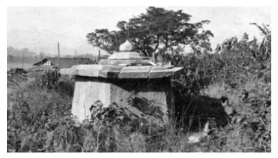
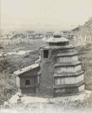

Historical Background
INFANT TOWER
Across the abandoned fields of Fujian and Jiangxi once stood strange structures that few dared approach. Born from the wars, floods, locust plagues, and famines of the late Qing dynasty, they were known as Baby Towers.
During this period, local communities built these tomb-like enclosures, shaped like inverted birdcages, as places to abandon infants they could no longer afford to raise—newborn girls, disabled children, and other unwanted babies. Left within the towers, many were condemned to die unseen and forgotten.


In local folklore, Baby Towers functioned as more than sites of abandonment—they were spiritual prisons.
Their gourd-shaped architecture symbolized containment, their narrow apertures restricted passage between worlds, and their sealed interiors embodied the belief that restless spirits could be trapped through darkness, enclosure, and ritual design.
In Baby Tower, these beliefs become the foundation of the game’s central antagonist: architecture itself. The tower is not merely a setting, but a machine built to prevent escape, rebirth, and transcendence.